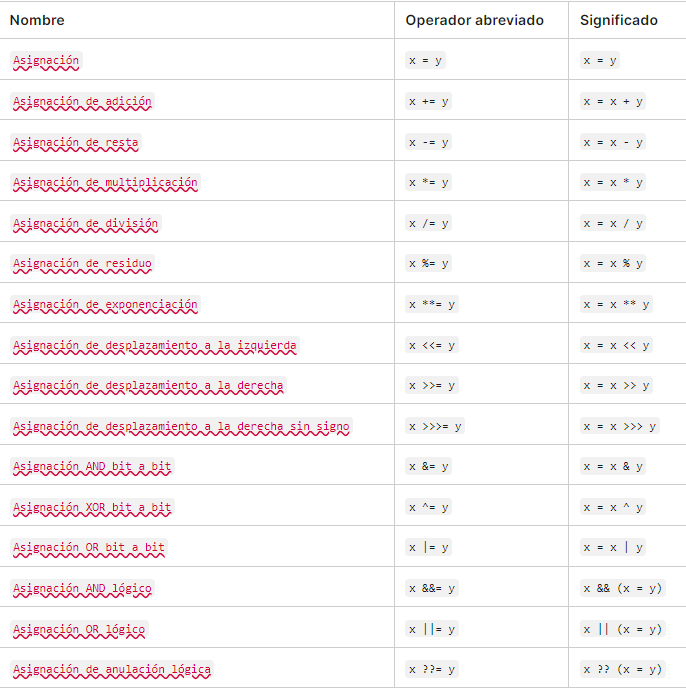

JS CHEATSHEET
- var declarada dentro de una función es local a esa función, por lo que no puede ser accedidas desde fuera de ella
- var declarada fuera de una función son globales, por lo que puede ser accedida desde cualquier parte del código
- let y const si se declaran en un bloque de código, solo pueden ser accedidas dentro de ese bloque (if, for, while, etc)
Hoisting lo que hace es que las variables y constantes suben al inicio del código, entonces existen para el compilador pero
pero no con su valor asignado, por lo que si se intenta acceder a ellas antes de ser declaradas, se obtendrá un valor undefined
console.log(x); // Output: undefined
var x = 5;
console.log(x); // Output: 5
Usar camelCase para nombrar variables y constantes ej: hoistedVariable son case-sensitive así que hoistedvariable no es lo mismo
Tipos de Datos en JavaScript
- Number: Representa enteros y números de punto flotante. Ejemplo:
let num = 10; - String: Representa texto. Ejemplo:
let texto = "Hola"; - Boolean: Representa valores lógicos verdadero/falso. Ejemplo:
let esVerdadero = true; - Undefined: guarda el valor undefined. Ejemplo:
let indefinido; - Null: guarda el valor null. Ejemplo:
let nulo = null; - Object: Representa un objeto. Ejemplo:
let persona = { nombre: "Juan", edad: 30 }; - Symbol: Introducido en ES6, representa un identificador único e inmutable. Se utiliza para crear propiedades de objetos que son únicas y no colisionan con otras propiedades.. Ejemplo:
const simboloId = Symbol('id'); - BigInt: Representa números enteros grandes. Ejemplo:
let bigNum = 9007199254740991n;
Creación de objetos:
let persona = {
nombre: "Juan",
edad: 30,
casado: false
};
Un objeto en JavaScript es una colección de pares clave-valor. En este ejemplo, se crea un objeto llamado persona con tres propiedades: nombre, edad y casado.
Acceso a las propiedades:
console.log(persona.nombre); // Juan
console.log(persona['edad']); // 30
Las propiedades de un objeto se pueden acceder utilizando la notación de punto o la notación de corchetes.
Métodos de los objetos:
let persona = {
nombre: "Juan",
edad: 30,
casado: false,
saludar: function() {
console.log("Hola, mi nombre es " + this.nombre);
}
};
persona.saludar(); // Hola, mi nombre es Juan
Los objetos en JavaScript pueden contener métodos, que son funciones asociadas al objeto. En este ejemplo, saludar es un método de persona que imprime un saludo.
Herencia de objetos:
function Animal(nombre) {
this.nombre = nombre;
}
Animal.prototype.saludar = function() {
console.log("Hola, soy un " + this.nombre);
};
let perro = new Animal("Perro");
perro.saludar(); // Hola, soy un Perro
Los objetos en JavaScript pueden heredar propiedades y métodos de otros objetos a través del prototipo. En este ejemplo, se define un constructor Animal con un método saludar que es heredado por el objeto perro.
Cuando intentas acceder a una propiedad de un objeto, JavaScript primero busca esa propiedad en el objeto mismo. Si no la encuentra, busca en el prototipo del objeto y luego en el prototipo del prototipo, y así sucesivamente hasta llegar al prototipo null.
Ejemplo cuando hago Animal.prototype.nombreAnimal = function() {
console.log("Hola, soy " + this.nombreAnimal);
};
Lo que hago es cargarle al prototipo al animal el metodo no al objeto animal directamente. Ahorrando memoria porque evito duplicar metodos por cada instancia de animal.
Objetos integrados en JavaScript
- Object: El objeto base de JavaScript que tiene métodos y propiedades comunes a todos los objetos.
let persona = { nombre: 'Juan', edad: 30 }; - Array: Utilizado para almacenar colecciones de elementos en una secuencia indexada.
let numeros = [1, 2, 3, 4, 5]; - String: Utilizado para manipular cadenas de texto.
let mensaje = 'Hola, mundo!'; - Number: Utilizado para valores numéricos y operaciones matemáticas.
let edad = 30; - Boolean: Representa un valor lógico verdadero o falso.
let esMayor = true; - Function: Utilizado para definir funciones.
function saludar(nombre) { console.log('Hola, ' + nombre); } - Date: Utilizado para trabajar con fechas y horas.
let fecha = new Date(); - RegExp: Utilizado para trabajar con expresiones regulares.
let expresionRegular = /[a-z]+/; - Error: Utilizado para representar errores en tiempo de ejecución.
throw new Error('Este es un error personalizado'); - Math: Proporciona métodos y constantes matemáticas útiles.
let raizCuadrada = Math.sqrt(16); - JSON: Utilizado para trabajar con el formato de intercambio de datos JSON.
let personaJSON = '{"nombre": "Juan", "edad": 30}';;
Puedes convertir un objeto JavaScript a una cadena JSON utilizando el método JSON.stringify():persona = { nombre: "Juan", edad: 30 };
let personaJSON = JSON.stringify(persona);
console.log(personaJSON); // '{"nombre":"Juan","edad":30}'
Typeof
typeof es un operador en JavaScript que se utiliza para obtener el tipo de datos de una variable o expresión. let x = 10;
console.log(typeof x); // "number"
Typecasting en JavaScript
Conversión implícita
JavaScript realiza conversiones implícitas de tipos cuando se realiza una operación entre tipos de datos diferentes. Por ejemplo:
let x = 10 + "20"; // x es "1020" (string)
let y = "10" - 5; // y es 5 (number)
Conversión explícita
Se puede realizar conversión explícita utilizando funciones o operadores específicos:
parseInt()yparseFloat(): Convierten una cadena a un número entero o decimal, respectivamente.let num1 = parseInt("10"); // num1 es 10let num2 = parseFloat("10.5"); // num2 es 10.5String(): Convierte un valor a una cadena de texto.Number(): Convierte un valor a un número.Boolean(): Convierte un valor a un booleano.
Type Coercion
La coerción de tipos es la conversión automática o implícita de valores de un tipo de datos a otro. JavaScript es un lenguaje de tipado débil y dinámico, lo que significa que los tipos de datos se convierten automáticamente según sea necesario durante la ejecución del programa. Puede convertir automáticamente los valores de un tipo a otro según sea necesario para completar una operación. Por ejemplo, en una operación de suma donde uno de los operandos es una cadena, JavaScript convertirá el otro operando a cadena y concatenará las cadenas en lugar de sumar los números.
Arrays, Mapas y Conjuntos en JavaScript
Array
Un array es una estructura de datos que se utiliza para almacenar una colección de elementos. Puedes inicializar un array con elementos predefinidos o crear un array vacío y agregar elementos a él dinámicamente.
Ejemplo:
let numeros = [1, 2, 3, 4, 5];TypedArray
TypedArray es un tipo especial de array en JavaScript que proporciona un mecanismo eficiente para trabajar con datos binarios y de tipo específico. A diferencia de los arrays normales, los TypedArray están diseñados para contener elementos de un tipo específico y se utilizan principalmente en operaciones que requieren un acceso rápido a los datos binarios.
Ejemplo:
let numeros = new Uint8Array([1, 2, 3, 4, 5]);Map
El objeto Map es una estructura de datos que almacena pares clave-valor y mantiene el orden de inserción de las claves. Las claves de un mapa pueden ser de cualquier tipo, incluidos objetos y valores primitivos.
Ejemplo:
let mapa = new Map();
mapa.set("clave1", "valor1");
mapa.set("clave2", "valor2");Set
El objeto Set es una estructura de datos que almacena valores únicos de cualquier tipo. Los valores en un conjunto son únicos, lo que significa que no puede haber duplicados en el conjunto.
Ejemplo:
let conjunto = new Set();
conjunto.add("a");
conjunto.add("b");
conjunto.add("a"); // "a" ya existe en el conjuntoWeakMap
El objeto WeakMap es una colección de pares clave/valor en la que las claves son objetos y los valores pueden ser de cualquier tipo. A diferencia de un Map estándar, las claves en un WeakMap son débiles (weak), lo que significa que no evitan que los objetos utilizados como claves sean eliminados por el recolector de basura si no hay otras referencias a ellos fuera del WeakMap.
Ejemplo:
let weakMap = new WeakMap();
let key = {};
weakMap.set(key, "value");Lo que hacen estos weakmap y weakset es que pueden ser borrados por el garbage collector cuando ya no son accesibles o referenciados por ninguna parte del código
Ejemplo con Weakmap vs Map john = { name: "John" };
let weakMap = new WeakMap();
weakMap.set(john, "...");
john = null; // overwrite the reference
// john is removed from memory!
let john = { name: "John" };
let array = [ john ];
john = null; // overwrite the reference
// the object previously referenced by john is stored inside the array
// therefore it won't be garbage-collected
// we can get it as array[0]
WeakSet
El objeto WeakSet es una colección de objetos. A diferencia de Set, los objetos en un WeakSet son débiles (weak), lo que significa que si no hay otras referencias a un objeto almacenado en un WeakSet, el recolector de basura puede eliminar el objeto de la memoria.
Ejemplo:
let weakSet = new WeakSet();
let obj = {};
weakSet.add(obj);Comparación de Igualdad Débil (==)
- JavaScript intenta convertir ambos valores a un tipo común antes de realizar la comparación.
- Si los tipos de los dos valores son diferentes, JavaScript intentará convertir uno o ambos valores para que tengan el mismo tipo antes de realizar la comparación.
- Ejemplo:
1 == '1'devuelvetrueporque JavaScript convierte automáticamente el string'1'en el número1antes de realizar la comparación.
Comparación de Igualdad Estricta (===)
- En una comparación de igualdad estricta, los valores se comparan sin realizar ninguna conversión de tipo.
- Los valores solo se consideran iguales si tienen el mismo valor y el mismo tipo de datos.
- Ejemplo:
1 === '1'devuelvefalseporque los tipos de datos son diferentes (número vs string), incluso si los valores son iguales.
En general, se recomienda utilizar la comparación de igualdad estricta (===) en lugar de la comparación de igualdad débil (==), ya que la igualdad estricta es más predecible y menos propensa a errores debido a las conversiones automáticas de tipo que realiza JavaScript en la igualdad débil.
Object.is()
- se utiliza sobre los operadores de igualdad estricta (===) cuando se desea una comparación de igualdad aún más estricta y precisa. Aunque === es generalmente seguro y confiable para comparar valores en JavaScript, tiene algunas peculiaridades que pueden conducir a resultados inesperados en ciertos casos. Object.is() aborda estas peculiaridades al proporcionar una comparación más precisa en los siguientes casos:
console.log(NaN === NaN); // false
console.log(Object.is(NaN, NaN)); // trueconsole.log(-0 === +0); // true
console.log(Object.is(-0, +0)); // false
For in y For of
For in se utiliza para iterar sobre las propiedades de un objeto. For of se utiliza para iterar sobre los elementos de un objeto iterable como un array o un string.
Ejemplo de uso de break y continue en JavaScript
La palabra clave break se utiliza para salir de un bucle.
for (let i = 0; i < 10; i++) {
if (i === 5) {
break;
}
console.log(i);
}
// Salida: 0 1 2 3 4
La palabra clave continue se utiliza para saltar a la siguiente iteración de un bucle.
for (let i = 0; i < 5; i++) {
if (i === 2) {
continue;
}
console.log(i);
}
// Salida: 0 1 3 4
Declaraciones Etiquetadas en JavaScript
Las declaraciones etiquetadas te permiten asociar una etiqueta a una declaración para controlar el flujo de ejecución.
Ejemplo de uso:
outerloop: for (let i = 0; i < 3; i++) {
innerloop: for (let j = 0; j < 3; j++) {
console.log('i = ' + i + ', j = ' + j);
if (i === 1 && j === 1) {
break outerloop;
}
}
}
En este ejemplo, la etiqueta "outerloop" está asociada al bucle exterior y "innerloop" al bucle interior. La declaración break outerloop; hace que se salga del bucle etiquetado como "outerloop", terminando ambos bucles.
Manejo de Excepciones en JavaScript
El manejo de excepciones se utiliza para controlar errores que pueden ocurrir durante la ejecución de un programa, javascript creara un objeto error con dos propiedades nombre y mensaje.
try: Define un bloque de código en el que pueden ocurrir errores.catch: Define un bloque de código para manejar las excepciones lanzadas en el bloquetry.finally: Define un bloque de código que se ejecutará siempre, independientemente de si se produce un error o no en el bloquetry.throw: Lanza una excepción manualmente.
Ejemplo de uso:
function validarEdad(edad) {
if (edad < 18) {
throw new Error("La edad debe ser mayor o igual a 18 años");
}
return "Puede ingresar";
}
try {
let resultado = validarEdad(16);
console.log(resultado);
} catch (error) {
console.error('Se produjo un error:', error.message);
} finally {
console.log('Este bloque siempre se ejecuta, independientemente de si se produjo un error o no');
}

Definición de Funciones
Las declaraciones de funciones en JavaScript se realizan utilizando la palabra clave function. Las funciones también se pueden definir guardando expresiones de función en una variable. Las funciones "arrow" se utilizan comúnmente de esta manera.
Ejemplo:
function saludar(nombre) {
return "¡Hola, " + nombre + "!";
}
let mensaje = saludar("John");
console.log(mensaje); // Salida: ¡Hola, John!
Llamando a Funciones
Cuando se define una función, aún no se ejecuta. Para llamar e invocar el código de una función, utiliza el nombre de la función seguido de paréntesis: nombreDeLaFuncion().
Ejemplo:
function suma(a, b) {
return a + b;
}
let resultado = suma(5, 3);
console.log(resultado); // Salida: 8
Parámetros Predeterminados en Funciones de JavaScript
Los parámetros predeterminados te permiten especificar valores por defecto para los parámetros de una función en caso de que no se pase ningún argumento o si el argumento es undefined. Esta característica fue introducida en ECMAScript 6 (ES6).
function saludar(nombre = "Invitado") {
console.log("Hola, " + nombre + "!");
}
saludar(); // Salida: Hola, Invitado!
saludar("Juan"); // Salida: Hola, Juan!
En el ejemplo anterior, la función saludar tiene un parámetro predeterminado nombre establecido en "Invitado". Si no se proporciona ningún argumento al llamar a saludar(), utilizará el valor predeterminado. Si se proporciona un argumento, utilizará el valor proporcionado.
Parámetros Rest
Los Rest Parameters en JavaScript permiten a una función aceptar un número variable de argumentos como un array, proporcionando una forma de representar una cantidad indefinida de parámetros como un solo parámetro. Esto es útil cuando queremos que una función acepte un número variable de argumentos sin tener que especificar cada uno de ellos en la definición de la función.
La sintaxis de Rest Parameters en JavaScript es utilizar tres puntos (`...`) seguidos del nombre que queremos darle al parámetro que recogerá el resto de los argumentos:
function nombreFuncion(parametro1, parametro2, ...restoDeParametros) {
// Cuerpo de la función
}
En este ejemplo, `parametro1` y `parametro2` son parámetros normales de la función, mientras que `restoDeParametros` es el Rest Parameter que recogerá el resto de los argumentos pasados a la función en forma de un array.
Arrow Functions
La sintaxis básica de una Arrow Function es:
let miFuncion = (param1, param2) => {
// Cuerpo de la función
};
Si el cuerpo de la función consiste en una sola expresión, puedes omitir las llaves y la palabra return:
let cuadrado = (num) => num * num;
console.log(cuadrado(5)); // Salida: 25
Si la función no tiene parámetros o tiene solo un parámetro, puedes omitir los paréntesis alrededor de los parámetros:
let saludar = () => "Hola";
console.log(saludar()); // Salida: Hola
let duplicar = num => num * 2;
console.log(duplicar(3)); // Salida: 6
En las Arrow Functions, this se mantiene del contexto léxico circundante:
function Persona() {
this.edad = 0;
setInterval(() => {
this.edad++; // `this` apunta al objeto Persona
console.log(this.edad);
}, 1000);
}
let p = new Persona();
Las Arrow Functions no pueden ser utilizadas como constructores para crear objetos y no tienen su propio this.
() => expression
param => expression
(param) => expression
(param1, paramN) => expression
() => { statements }
param => { statements }
(param1, paramN) => { statements }
IIFE en JavaScript
Las IIFE (Immediately Invoked Function Expressions) en JavaScript son funciones que se ejecutan inmediatamente después de ser definidas. Son útiles en situaciones donde necesitas ejecutar una función de forma inmediata y luego descartarla, lo que ayuda a evitar la contaminación del ámbito global y a mantener el código más organizado.
Sintaxis básica: La sintaxis de una IIFE (Immediately Invoked Function Expression) en JavaScript consiste en envolver una función entre paréntesis y luego llamarla inmediatamente añadiendo () al final. Esto hace que la función se ejecute automáticamente tan pronto como se define.
(function() {
// Código a ejecutar
})();
Uso de parámetros
(function(param1, param2) {
// Código a ejecutar con parámetros
})(valor1, valor2);
Evitar la contaminación del ámbito global
(function() {
var mensaje = "Hola, mundo!";
console.log(mensaje);
})();
// console.log(mensaje); // Esto dará un error porque `mensaje` está fuera de ámbito
Módulos
var modulo = (function() {
var privadoVariable = "Soy privado";
function privadoFuncion() {
return "También soy privado";
}
return {
publicoVariable: "Soy público",
publicoFuncion: function() {
return "También soy público";
}
};
})();
console.log(modulo.publicoVariable); // Salida: Soy público
console.log(modulo.publicoFuncion()); // Salida: También soy público
// console.log(modulo.privadoVariable); // Esto dará un error porque `privadoVariable` es privada
// console.log(modulo.privadoFuncion()); // Esto dará un error porque `privadoFuncion` es privada
Las IIFE son una herramienta útil en JavaScript para encapsular código y evitar la contaminación del ámbito global, lo que las hace especialmente útiles en aplicaciones más grandes y complejas.
El objeto arguments en JavaScript es una variable local disponible dentro de todas las funciones que proporciona un conjunto de argumentos pasados a la función cuando es llamada. El objeto arguments es similar a un array, pero no tiene todas las funcionalidades de un array (por ejemplo, no tiene métodos como map o forEach).
Acceso a los argumentos
function suma() {
let total = 0;
for (let i = 0; i < arguments.length; i++) {
total += arguments[i];
}
return total;
}
console.log(suma(1, 2, 3, 4, 5)); // Salida: 15
Número de argumentos
function numeroDeArgumentos() {
return arguments.length;
}
console.log(numeroDeArgumentos(1, 2, 3)); // Salida: 3
No es un array real
Aunque el objeto arguments se comporta de manera similar a un array, no es un array real y no tiene todos los métodos de un array. Por ejemplo, no puedes utilizar métodos como map o forEach directamente en el objeto arguments.
Contexto de ejecución
function ejemplo(a, b) {
console.log(arguments[0], arguments[1]);
a = 10;
b = 20;
console.log(arguments[0], arguments[1]);
}
ejemplo(1, 2);
// Salida:
// 1, 2
// 1, 2
El objeto arguments puede ser útil cuando necesitas manejar un número variable de argumentos en una función o cuando no sabes de antemano cuántos argumentos serán pasados. Sin embargo, su uso se considera menos común en el desarrollo moderno de JavaScript, ya que existen alternativas más simples y seguras, como el uso de parámetros de función predeterminados o el uso de arrays reales para pasar argumentos.
Call Stack o Pila Llamados
La pila de funciones (Function Stack) en JavaScript se ejecuta de manera secuencial, de arriba hacia abajo. Esto significa que cuando se llama a una función, se añade al principio de la pila (arriba de todo) y se ejecuta antes que las funciones que ya estaban en la pila. Una vez que una función termina su ejecución, se elimina de la pila y el control vuelve a la función que estaba en la parte superior de la pila antes de que se llamara a la función actual. Por ejemplo si una función llama a otra función primero se ejecuta la que se llamó y después que esta termine se vuelve a la original que la llamó.
Recursión
La recursión es un concepto en programación en el que una función se llama a sí misma para resolver un problema. La recursión se utiliza comúnmente en algoritmos que pueden dividirse en subproblemas más pequeños que son similares al problema original. La recursión se compone de dos partes: el caso base y el caso recursivo.
var recursionLimit = 0;
function r() {
recursionLimit++;
r();
}
r();Closures en JavaScript
Un closure en JavaScript es una función que tiene acceso a variables en su ámbito externo, incluso después de que la función externa haya terminado de ejecutarse. En otras palabras, un closure recuerda el ámbito en el que se creó y puede acceder a las variables de ese ámbito incluso cuando la función se ejecuta en un contexto diferente.
Los closures son posibles en JavaScript debido al "lexical scoping", que determina el alcance de las variables en función de la estructura del código fuente. Cuando una función se define dentro de otra función, la función interna forma un closure sobre las variables de la función externa, lo que significa que retiene acceso a esas variables incluso después de que la función externa haya finalizado.
Los closures son útiles en muchos escenarios, como para crear funciones que actúan como contadores privados, para encapsular datos privados en módulos, para manejar eventos y devoluciones de llamada, entre otros.
En resumen, los closures en JavaScript permiten un manejo más flexible de las variables y el alcance de las funciones, lo que los hace una característica poderosa y versátil del lenguaje.
Ejemplo de Closure:
function contador() {
let count = 0;
return function() {
return ++count;
};
}
let incrementar = contador();
console.log(incrementar()); // 1
console.log(incrementar()); // 2
console.log(incrementar()); // 3
Modo estricto en JavaScript
El "modo estricto" (strict mode) es una característica de JavaScript introducida en ECMAScript 5 que te permite escribir código JavaScript de manera más segura y con mejores prácticas. Cuando se activa el "modo estricto", se hacen algunas restricciones y cambios en el comportamiento normal de JavaScript.
Algunas de las características y usos del "modo estricto" incluyen:
- Errores y advertencias adicionales.
- Errores en asignaciones no permitidas.
- Eliminación de funciones y variables globales implícitas.
- Restricciones en la sintaxis.
- Evitar el uso de la declaración
with.
En resumen, el "modo estricto" es una herramienta útil para escribir código JavaScript más seguro y robusto, evitando errores comunes y aplicando mejores prácticas de programación. Se recomienda utilizarlo en todos los nuevos proyectos y al actualizar código existente para mejorar su calidad y mantenibilidad.
Keyword "this" en JavaScript
El keyword this en JavaScript se refiere al objeto al que pertenece en un determinado contexto. El valor de this depende de cómo se llama a la función y dónde se encuentra la llamada a la función.
- En el contexto global:
thisse refiere al objeto global en el navegador (windowen un navegador web) o al objeto global en Node.js (globalen Node.js). - En el contexto de una función:
- Si se llama a la función como un método de un objeto,
thisse refiere al objeto que posee el método. - Si se llama a la función como una función normal,
thisse refiere al objeto global (oundefineden modo estricto).
let objeto = { nombre: 'Juan', saludar: function() { console.log('Hola, mi nombre es ' + this.nombre); } }; objeto.saludar(); // Hola, mi nombre es Juan let saludarFuncion = objeto.saludar; saludarFuncion(); // TypeError en modo estricto, de lo contrario: Hola, mi nombre es undefined o Hola, mi nombre es [nombre global] - Si se llama a la función como un método de un objeto,
- En el contexto de un evento:
thisse refiere al elemento en sí en un manejador de eventos en un elemento HTML. - En el contexto de una función flecha: En una función flecha,
thisse mantiene del ámbito exterior al que pertenece la función flecha, en lugar de ser dinámico como en las funciones regulares.
let objeto = {
nombre: 'María',
saludar: function() {
setTimeout(() => {
console.log('Hola, mi nombre es ' + this.nombre);
}, 1000);
}
};
objeto.saludar(); // Hola, mi nombre es María después de 1 segundo
Entender cómo funciona this es importante para evitar errores y utilizarlo correctamente en diferentes situaciones en JavaScript.
In an object method, this refers to the object
Alone, this refers to the global object
In a function, this refers to the global object
In a function, in strict mode, this is undefined
In an event, this refers to the element that received the event
Methods like call(), apply(), and bind() can refer this to any object
Function Borrowing
Fucntion Borrowing consiste en tomar prestada una función de otro objeto y utilizarla en el contexto de un objeto diferente. Esto se puede hacer utilizando los métodos call() y apply() en JavaScript. Es medio controversial "Function borrowing is usually just a workaround for poor initial design."
let obj1 = {
nombre: 'Juan',
saludar: function() {
console.log('Hola, mi nombre es ' + this.nombre);
}
};
let obj2 = {
nombre: 'María'
};
obj1.saludar(); // Hola, mi nombre es Juan
// Usando la función de obj1 en obj2
obj1.saludar.call(obj2); // Hola, mi nombre es MaríaExplicit Binding
Explicit Binding es una técnica en JavaScript para forzar a una función a utilizar/asociar un objeto específico como su contexto de this. Esto se puede hacer utilizando los métodos call() lo pide separado por comas, apply() lo pide como un arreglo de los parámetros o bind() te crea una función nueva con el contexto nuevo en JavaScript.
const persona = {
nombre: 'Juan',
};
const otraPersona = {
nombre: 'María'
};
function saludar(likes, dislikes) {
console.log('Hola, mi nombre es ' + this.nombre + y tengo ' + likes + ' likes y ' + dislikes + ' dislikes');
}
console.log(saludar.call(persona, 10, 5)); // Hola, mi nombre es Juan y tengo 10 likes y 5 dislikes
console.log(saludar.apply(otraPersona, [20, 10])); // Hola, mi nombre es María y tengo 20 likes y 10 dislikes
const nuevaFuncion = saludar.bind(persona);
console.log(nuevaFuncion(15, 5)); // Hola, mi nombre es Juan y tengo 15 likes y 5 dislikes
Asynchronous JavaScript
La programación asíncrona es una técnica que permite que tu programa inicie una tarea potencialmente de larga duración y aún así pueda responder a otros eventos mientras esa tarea se ejecuta, en lugar de tener que esperar hasta que esa tarea haya terminado. Una vez que esa tarea ha terminado, tu programa recibe el resultado.
Muchas funciones proporcionadas por los navegadores, especialmente las más interesantes, pueden llevar mucho tiempo y, por lo tanto, son asíncronas. Por ejemplo:
Hacer solicitudes HTTP utilizando fetch()
Acceder a la cámara o al micrófono de un usuario utilizando getUserMedia()
Pedir a un usuario que seleccione archivos utilizando showOpenFilePicker()
Hay varias formas de lograr la asincronía en JavaScript:
- Callbacks: Los callbacks son funciones que se pasan como argumentos a otras funciones y se ejecutan después de que se completa una operación asincrónica. Los callbacks son una forma común de trabajar con operaciones asíncronas en JavaScript, pero como pueden llevar a un código anidado y difícil de leer (callback hell) ya no se usan tanto.
- Promesas: Las promesas representan un valor que puede estar disponible ahora, en el futuro o nunca. Permiten encadenar operaciones asincrónicas de manera más legible y manejar errores de manera más efectiva.
function hacerAlgoAsincrono() { return new Promise(function(resolve, reject) { setTimeout(function() { console.log('Operación asincrónica completada'); resolve(); }, 1000); }); } console.log('Comenzando operación asincrónica'); hacerAlgoAsincrono().then(function() { console.log('Continuando con el flujo de trabajo'); }); - Async/await: La sintaxis async/await es una forma de escribir código asincrónico de manera síncrona. Permite que una función asíncrona se comporte como una función síncrona al utilizar la palabra clave await para esperar que se resuelva una promesa.
async function hacerAlgoAsincrono() { return new Promise(function(resolve, reject) { setTimeout(function() { console.log('Operación asincrónica completada'); resolve(); }, 1000); }); } console.log('Comenzando operación asincrónica'); async function ejecutar() { await hacerAlgoAsincrono(); console.log('Continuando con el flujo de trabajo'); } ejecutar();
function doStep1(init, callback) {
const result = init + 1;
callback(result);
}
function doStep2(init, callback) {
const result = init + 2;
callback(result);
}
function doStep3(init, callback) {
const result = init + 3;
callback(result);
}
function doOperation() {
doStep1(0, (result1) => {
doStep2(result1, (result2) => {
doStep3(result2, (result3) => {
console.log(`result: ${result3}`);
});
});
});
}
doOperation();
En resumen, JavaScript ofrece varias formas de trabajar de manera asíncrona, lo que es fundamental para construir aplicaciones web interactivas y eficientes. La elección de la técnica adecuada depende del caso de uso específico y de las preferencias de estilo de codificación.
setTimeout y setInterval en JavaScript
setTimeout
La función setTimeout se utiliza para ejecutar una función o un fragmento de código una vez después de un período de tiempo especificado.
setTimeout(function() {
console.log('Hola, mundo!');
}, 1000); // Ejecutar después de 1 segundosetInterval
La función setInterval se utiliza para ejecutar una función o un fragmento de código repetidamente cada cierto período de tiempo especificado.
setInterval(function() {
console.log('Hola, mundo!');
}, 1000); // Ejecutar cada 1 segundoEs importante tener en cuenta que tanto setTimeout como setInterval son funciones asíncronas y no detienen la ejecución del resto del código. Además, ambas funciones devuelven un identificador que puede usarse para cancelar la ejecución futura de la función con clearTimeout (para setTimeout) o clearInterval (para setInterval).
XMLHttpRequest y fetch en JavaScript
XMLHttpRequest (XHR)
XMLHttpRequest es un objeto en JavaScript que proporciona funcionalidades para realizar solicitudes HTTP de forma asíncrona.
var xhr = new XMLHttpRequest();
xhr.open('GET', 'https://ejemplo.com/api/data', true);
xhr.onreadystatechange = function() {
if (xhr.readyState == 4 && xhr.status == 200) {
console.log(xhr.responseText);
}
};
xhr.send();fetch API
fetch es una API moderna para realizar solicitudes HTTP que proporciona una interfaz más limpia y promesas para trabajar de manera asíncrona.
fetch('https://ejemplo.com/api/data')
.then(response => response.json())
.then(data => console.log(data))
.catch(error => console.error('Error:', error));Diferencias
- XMLHttpRequest es compatible con versiones anteriores de navegadores, mientras que fetch es una API moderna.
- fetch utiliza promesas, lo que facilita el manejo de las respuestas y el encadenamiento de operaciones.
- fetch no envía ni recibe cookies de forma predeterminada, mientras que XMLHttpRequest sí lo hace.
- fetch no rechaza la promesa en caso de errores HTTP, mientras que XMLHttpRequest sí lo hace.
Classes en JavaScript
Declaración de una clase
Para declarar una clase en JavaScript, utilizamos la palabra clave class, seguida del nombre de la clase. Dentro de la clase, definimos métodos utilizando la sintaxis de funciones normales.
class Persona {
constructor(nombre, edad) {
this.nombre = nombre;
this.edad = edad;
}
saludar() {
console.log(`Hola, mi nombre es ${this.nombre} y tengo ${this.edad} años.`);
}
}Creación de objetos
Para crear un objeto de una clase, utilizamos la palabra clave new seguida del nombre de la clase y los argumentos necesarios para el constructor, si lo tiene.
let persona1 = new Persona('Juan', 30);
let persona2 = new Persona('María', 25);Herencia
Las clases en JavaScript también admiten la herencia. Para heredar de una clase base, utilizamos la palabra clave extends seguida del nombre de la clase base.
class Estudiante extends Persona {
constructor(nombre, edad, curso) {
super(nombre, edad);
this.curso = curso;
}
estudiar() {
console.log(`${this.nombre} está estudiando ${this.curso}.`);
}
}
let estudiante1 = new Estudiante('Pedro', 20, 'Matemáticas');Iterators y Generators en JavaScript
Iteradores (Iterators)
Los iteradores son objetos que permiten recorrer secuencias de datos, como arrays, cadenas (strings) o cualquier objeto con una estructura similar a una colección.
let arr = [1, 2, 3];
let iterator = arr[Symbol.iterator]();
console.log(iterator.next()); // { value: 1, done: false }
console.log(iterator.next()); // { value: 2, done: false }
console.log(iterator.next()); // { value: 3, done: false }
console.log(iterator.next()); // { value: undefined, done: true }Generadores (Generators)
Los generadores son funciones especiales que pueden ser pausadas y luego reanudadas. Se declaran utilizando la palabra clave function* y utilizan la palabra clave yield para pausar la ejecución y devolver un valor.
function* generateNumbers() {
yield 1;
yield 2;
yield 3;
}
let generator = generateNumbers();
console.log(generator.next()); // { value: 1, done: false }
console.log(generator.next()); // { value: 2, done: false }
console.log(generator.next()); // { value: 3, done: false }
console.log(generator.next()); // { value: undefined, done: true }Los generadores son útiles cuando se necesitan secuencias de valores que pueden ser generados de manera perezosa (lazy) o cuando se necesita un control más fino sobre la generación de valores en una secuencia. Los iteradores y generadores son características poderosas de JavaScript que pueden mejorar la legibilidad y la eficiencia del código cuando se utilizan correctamente.
Módulos en JavaScript
Exportar desde un módulo
Para exportar variables, funciones o clases desde un módulo, utilizamos la palabra clave export. Podemos exportar elementos individualmente o usar la declaración export default para exportar un elemento por defecto.
// En el archivo modulo.js
export const PI = 3.141592;
export function double(number) {
return number * 2;
}
export default function sayHello(name) {
console.log(`Hello, ${name}!`);
}Importar en otro módulo
Para importar elementos de un módulo en otro, utilizamos la palabra clave import. Podemos importar elementos individualmente o importar todo un módulo con la declaración import * as nombre from 'ruta'.
// En otro archivo
import { PI, double } from './modulo.js';
import sayHello from './modulo.js';
console.log(PI); // 3.141592
console.log(double(5)); // 10
sayHello('John'); // Hello, John!Exportar e importar todo un módulo
También podemos exportar e importar todo un módulo utilizando la declaración export * from 'ruta' para exportar y import * as nombre from 'ruta' para importar.
// En el archivo modulo.js
function greet(name) {
console.log(`Greetings, ${name}!`);
}
export { greet };// En otro archivo
import * as modulo from './modulo.js';
modulo.greet('Alice'); // Greetings, Alice!Los módulos en JavaScript nos permiten estructurar nuestro código de manera modular y reutilizable, lo que facilita el mantenimiento y la colaboración en proyectos más grandes. Es importante tener en cuenta que los módulos de JavaScript están estandarizados en ECMAScript 6 (ES6) y son ampliamente compatibles en navegadores modernos y entornos Node.js.
Chrome DevTools
Las Chrome DevTools son un conjunto de herramientas de desarrollo integradas en el navegador Google Chrome que te permiten depurar, perfilar y editar sitios web y aplicaciones web directamente desde el navegador. Estas herramientas son muy útiles para los desarrolladores web, ya que proporcionan una variedad de funciones para mejorar el proceso de desarrollo y depuración de código JavaScript.
Características principales
- Consola (Console): Permite ejecutar código JavaScript directamente en la página web, probar fragmentos de código, imprimir mensajes de depuración e interactuar con el DOM.
- Depurador de JavaScript (JavaScript Debugger): Permite establecer puntos de interrupción en el código y ejecutarlo paso a paso para identificar y corregir errores.
- Rendimiento (Performance): Permite perfilar el rendimiento de la aplicación web, identificar cuellos de botella y optimizar el código para mejorar la experiencia del usuario.
- Aplicación (Application): Permite inspeccionar y depurar el almacenamiento local, las cookies, los índices de base de datos y otros recursos almacenados localmente por la aplicación web.
- Fuentes (Sources): Permite ver y depurar el código fuente de la aplicación, incluidos los archivos JavaScript, CSS y HTML.
- Fragmentos (Snippets): Permite guardar y ejecutar fragmentos de código JavaScript con facilidad.
Las Chrome DevTools ofrecen muchas más funciones y herramientas que las mencionadas aquí, pero estas son algunas de las más relevantes para trabajar con JavaScript. Puedes acceder a las Chrome DevTools en Chrome haciendo clic con el botón derecho en cualquier parte de una página web y seleccionando "Inspeccionar" o utilizando el atajo de teclado Ctrl+Shift+I (Windows/Linux) o Cmd+Opt+I (Mac).
Explicación de querySelector
El método querySelector es una función poderosa en JavaScript que se utiliza para seleccionar elementos del DOM (Document Object Model) utilizando selectores CSS. Permite buscar y obtener el primer elemento que coincide con el selector especificado.
Sintaxis
element = document.querySelector(selector);Parámetros
selector: Un string que representa uno o más selectores CSS que se usan para encontrar el elemento correspondiente en el DOM.
Ejemplos
1. Seleccionar un elemento por su ID
var element = document.querySelector("#miId");
console.log(element); // Devuelve el elemento con id="miId"2. Seleccionar un elemento por su clase
var element = document.querySelector(".miClase");
console.log(element); // Devuelve el primer elemento con class="miClase"3. Seleccionar un elemento por su etiqueta
var element = document.querySelector("p");
console.log(element); // Devuelve el primer <p> elemento4. Seleccionar un elemento usando combinaciones de selectores
var element = document.querySelector("div.miClase #miId");
console.log(element); // Devuelve el elemento con id="miId" que está dentro de un <div> con class="miClase"5. Seleccionar un elemento usando atributos
var element = document.querySelector("input[type='text']");
console.log(element); // Devuelve el primer <input> elemento con type="text"Consideraciones
querySelector solo devuelve el primer elemento que coincide con el selector especificado. Si necesitas obtener todos los elementos que coinciden, puedes usar document.querySelectorAll(selector).
Explicación de addEventListener, document, y bundlers
addEventListener
addEventListener es un método en JavaScript que permite añadir un evento a un elemento del DOM (Document Object Model). Este método es fundamental para crear interactividad en las páginas web.
Sintaxis:
element.addEventListener(event, function, useCapture);
- element: El elemento del DOM al que deseas añadir el evento.
- event: El tipo de evento que quieres escuchar (por ejemplo, 'click', 'mouseover', 'keydown', etc.).
- function: La función que se ejecutará cuando ocurra el evento.
- useCapture: Un booleano opcional que indica si el evento debe ser capturado en la fase de captura (true) o en la fase de burbujeo (false, que es el valor por defecto).
Ejemplo:
document.getElementById('myButton').addEventListener('click', function() {
alert('Button was clicked!');
});
document
document es un objeto global que representa el documento HTML o XML cargado en el navegador. Proporciona varias propiedades y métodos para acceder y manipular el contenido y estructura del documento.
Propiedades comunes:
- document.getElementById(id): Devuelve el elemento con el ID especificado.
- document.querySelector(selector): Devuelve el primer elemento que coincida con el selector CSS.
- document.querySelectorAll(selector): Devuelve todos los elementos que coincidan con el selector CSS.
- document.createElement(tagName): Crea un nuevo elemento HTML.
Ejemplo:
let element = document.getElementById('myElement');
element.style.color = 'red';
Bundlers
Los bundlers son herramientas que toman módulos de código (JavaScript, CSS, imágenes, etc.) y los combinan en un único archivo o en unos pocos archivos, optimizados para el navegador. Esto mejora la eficiencia del sitio web, reduciendo el número de solicitudes HTTP y optimizando el rendimiento.
Ejemplos de bundlers populares:
Webpack
Una herramienta muy flexible y poderosa que permite gestionar, empaquetar y optimizar los módulos. Soporta loaders y plugins para transformar y optimizar diferentes tipos de archivos.
Ejemplo de configuración:
// webpack.config.js
module.exports = {
entry: './src/index.js',
output: {
filename: 'bundle.js',
path: __dirname + '/dist'
},
module: {
rules: [
{
test: /\.css$/,
use: ['style-loader', 'css-loader']
},
{
test: /\.js$/,
exclude: /node_modules/,
use: 'babel-loader'
}
]
}
};
Parcel
Un bundler sencillo y rápido que requiere poca configuración. Detecta automáticamente los diferentes tipos de archivos y los gestiona adecuadamente.
Ejemplo de uso:
parcel index.html
Rollup
Enfocado en la construcción de bibliotecas JavaScript, Rollup crea paquetes más pequeños y eficientes utilizando la sintaxis de módulos ES6.
Ejemplo de configuración:
// rollup.config.js
import commonjs from '@rollup/plugin-commonjs';
import resolve from '@rollup/plugin-node-resolve';
import babel from '@rollup/plugin-babel';
export default {
input: 'src/index.js',
output: {
file: 'dist/bundle.js',
format: 'iife',
name: 'MyBundle'
},
plugins: [
resolve(),
commonjs(),
babel({ babelHelpers: 'bundled' })
]
};
Cada uno de estos bundlers tiene sus propias ventajas y desventajas, y la elección depende de las necesidades específicas del proyecto.